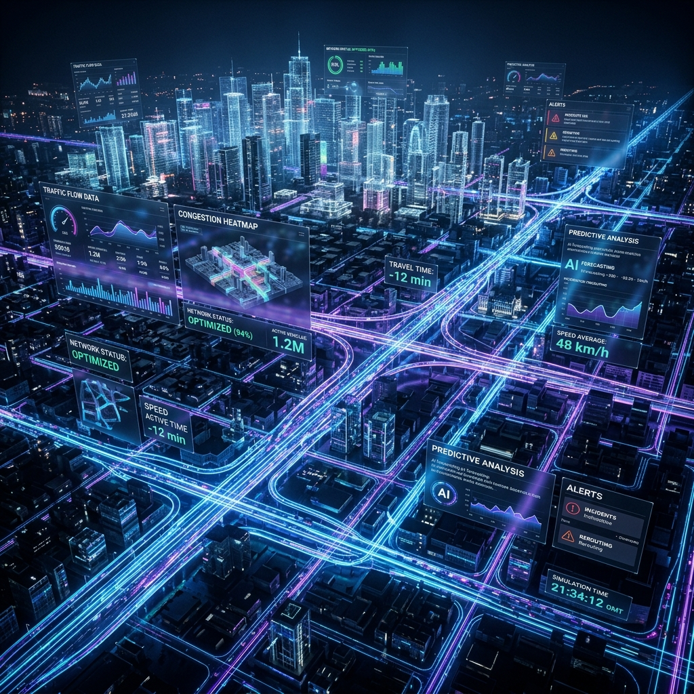

The next generation of urban traffic digital twins. Simulate, analyze, and optimize city dynamics with millisecond precision.
Advanced agent-based modeling for realistic pedestrian behavior, jaywalking simulations, and crowd flow analysis.
Sophisticated emergency braking and obstacle detection logic integrated directly into the vehicle physics engine.
Stream high-fidelity data from every agent in the simulation to an integrated SQLite database for deep analytics.
